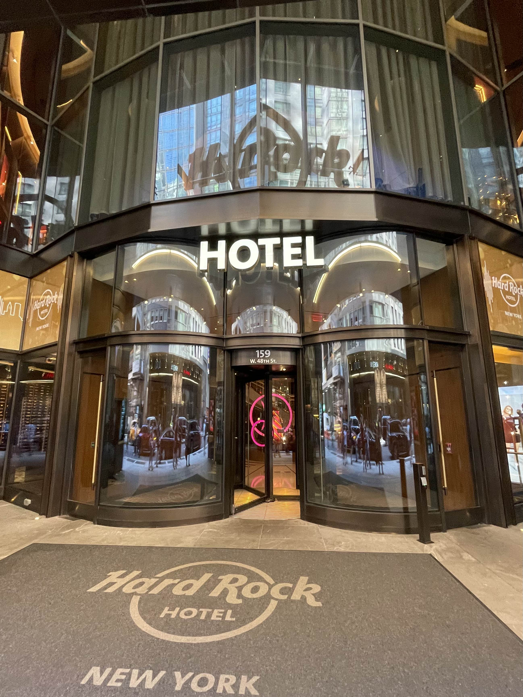
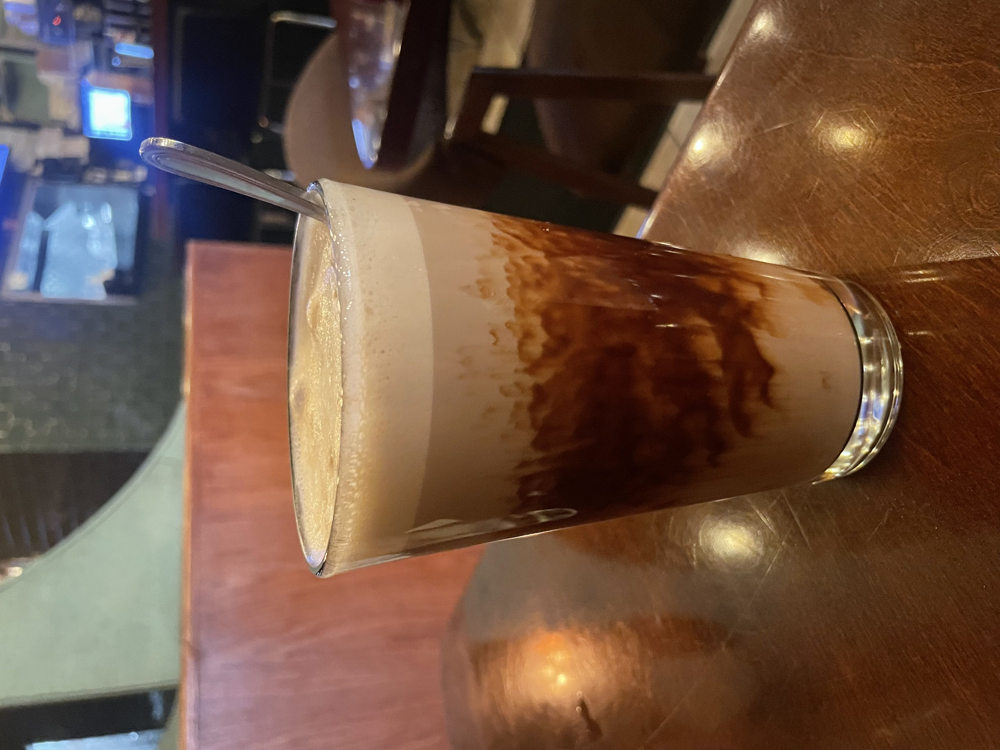
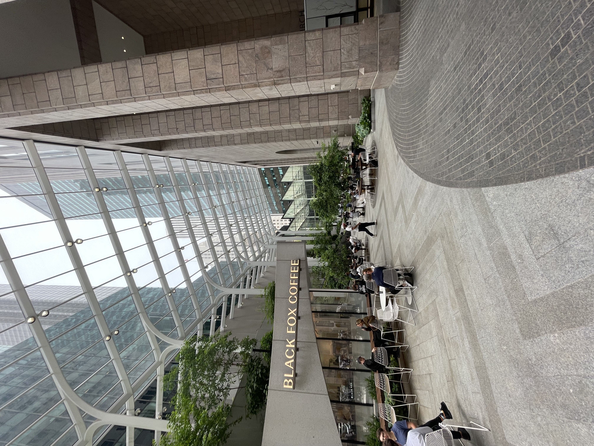
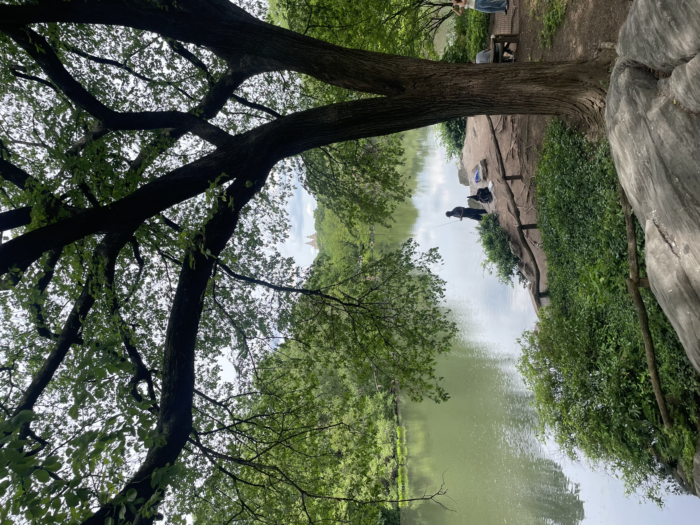
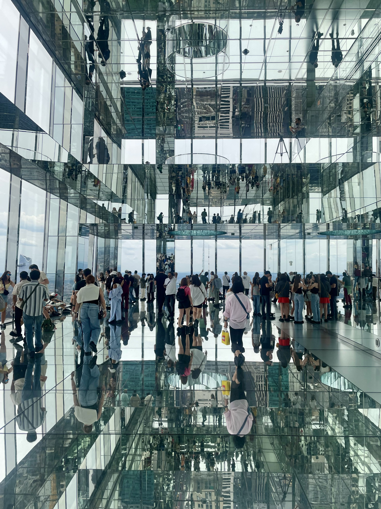

New York City 2025
May 26, 2025 - New York City, United States
This trip originated from my mom being asked to review the Hard Rock Hotel in NYC for Good Housekeeping magazine.
This was not my first time in New York, but there's so much to do, it never gets old.
The hotel turned out to be pretty mismanaged, but that didn't stop us from having an enjoyable time.
After dinner, we went to see "The Great Gatsby" musical on Broadway, and it was much better than I initially expected!
I didn't care for the book, but the musical kept me entertained the entire time (which is a difficult task).
They even had free drink refills at intermission, which is a bit of a rarity on Broadway nowadays.


May 27, 2025 - New York City, United States
The next day, we got up early for breakfast at Times Square Diner & Grill, where I got to try Egg Cream for the first time, a drink from New York that
mixes chocolate milk and seltzer.
It was okay.
However, the omelette was incredible!
It was the biggest one I've ever seen in my life!
After breakfast, we walked around, checking out cool buildings and monuments.
After seeing 53W53, we ran into a Japanese fusion food truck, where I got a salted kelp onigiri and matcha lavender milk tea as a snack.
Since we had been walking for a while, we relaxed in 550 Madison Avenue's public plaza for a bit.
After checking out more tall buildings, we moved to the shopping center, where there were all kinds of decorative buildings, included one shaped like a
stack of suitcases.
Next, we walked around Central Park a bit to reconnect with nature after being in the heart of the city for so long, and we encountered someone playing an electric
erhu!
After that, we went to The Plaza Hotel for some high tea.
The building was beautiful, and I got to try pu'er tea for the first time!
It was bitter, earthy, and a little bit savory, which worked perfectly with the finger food.
The food itself was pretty interesting; there were lots of rich snacks I'd never had before, and I was stuffed by the end.
After that, we headed to SUMMIT One Vanderbilt for a VIP tour.
There were many different mirrors that reflected the city view all over the inside of the building.
The art in it reminded me a lot of teamLab Planets in Tokyo.
All in all, this was a short but very fun trip to NYC!



